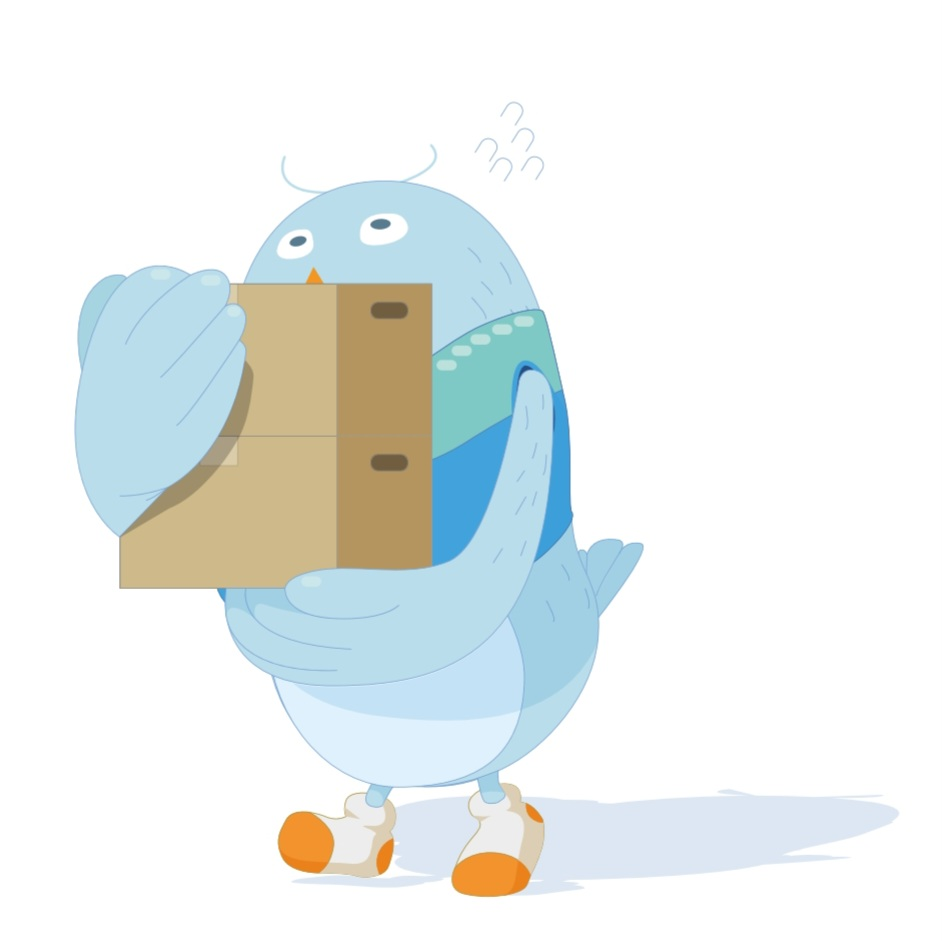

HAPPY BUDDY DAY !
00
:
00
pm
여행 성향 테스트 결과
자유 여행자
추억을 음미하는 탐구자

실내 활동을 선호하며, 계획보다는 현재의 흐름에 몸을 맡겨 즉흥적으로 움직이는 걸 좋아합니다. 태스크를 미리 처리해둔 덕분에 마음 편히 느긋한 시간을 보내며, 책방이나 카페처럼 조용한 공간에서 자신만의 속도로 여행을 즐깁니다. 사진보다는 오감으로 느낀 순간과 감정들을 기억 속에 담아두는 것을 선호합니다. 차분하고 감성적인 여정을 통해 내면의 만족과 평화를 찾는 스타일입니다.
Tips
여행 중 마신 커피의 맛, 들은 음악, 창문 너머 풍경처럼 감각적인 순간을 음미해보세요.
책방, 전시회, 지역의 이색 카페 등에서 새로운 경험을 발견하며 자신만의 여행을 만들어보세요.
Best Spots
이탈리아 베네치아: 여유롭게 도시를 탐험하고, 그 순간을 즐기기 좋은 곳입니다.
포르투갈 리스본: 편안하게 걷고 감상하며 본인만의 여행을 만끽할 수 있는 곳입니다.
오스트리아 비엔나: 특유의 느긋한 분위기 속에서 아름다운 문화와 예술을 만나볼 수 있습니다.